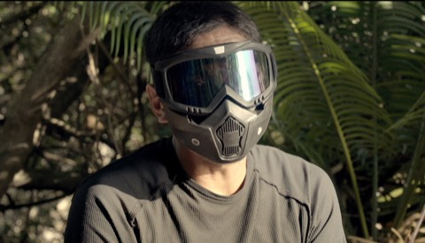
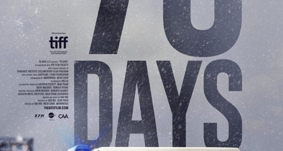
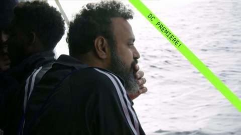
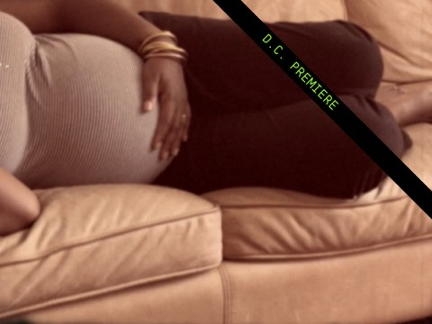

About the film
An unflinching, verité-style exposé, THE NIGHTCRAWLERS follows a determined group of photojournalists on their mission to chronicle the deadly battle being waged against the Philippines’ drug epidemic — and the tragic cost of this brutal crusade. Directed with pulse-pounding intensity by first-time director Alexander A. Mora, the documentary trails Raffy Lerma, a former staff photographer for a prominent newspaper, as he joins forces with a team of bold freelance photojournalists, or “nightcrawlers,” who are covering a wave of extrajudicial killings that, by some estimates, has claimed as many as 27,000 lives. With unprecedented access, the film also features shocking interviews with members of a mysterious death squad that prowls the city’s back alleys in search of people they are paid to kill with impunity.
At the festival
- 2019 Short Cuts - Program 2 · DC Premiere · Short Cuts - Program 2 · Sunday, October 13, 2019 · 12:00 PM · Naval Heritage CenterPost-screening discussion to follow with filmmakers
More films on these topics

76 DaysHao Wu, Weixi Chen2020 · 93 min
RescueSine Plambech2026 · 90 min The Drug in Our PocketAnnie Sundberg2026 · 77 min
The Drug in Our PocketAnnie Sundberg2026 · 77 min
Listen to MeStephanie Etienne, Kanika Harris2025 · 77 min We Bloom in Spring2025 · 19 min
We Bloom in Spring2025 · 19 min- A Shot at HistoryErika Cohn2024 · 24 min